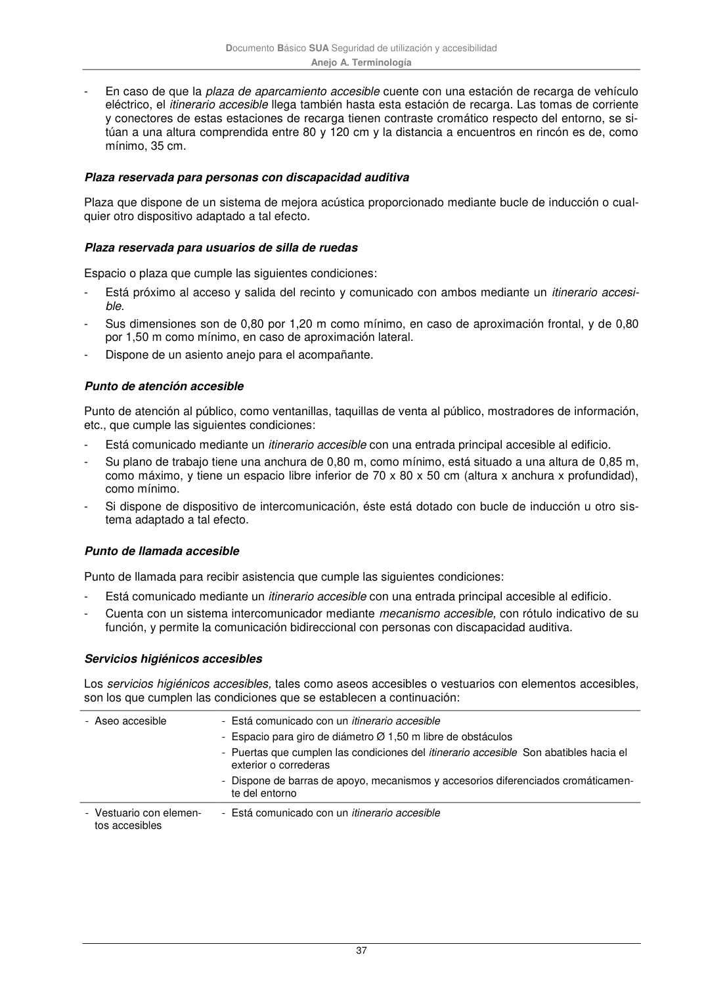

DB-SUA Seguridad de utilización y accesibilidad · edición 2022-06-14 · capa oficial
Documento DB-SUA-oficial · SHA-256 del PDF 3cfb5bbb135e8f02faebd8b844e03e8947994c18d4c9e675a7d2aa37d1cd5958
Copia fiel del PDF fuente · Fuente oficial
Ficha de la disposición en la fuente oficial
Formatos: JSON del segmento · Markdown
Documento Básico SUA Seguridad de utilización y accesibilidad Anejo A. Terminología 37 - En caso de que la plaza de aparcamiento accesible cuente con una estación de recarga de vehículo eléctrico, el itinerario accesible llega también hasta esta estación de recarga. Las tomas de corriente y conectores de estas estaciones de recarga tienen contraste cromático respecto del entorno, se si- túan a una altura comprendida entre 80 y 120 cm y la distancia a encuentros en rincón es de, como mínimo, 35 cm. Plaza reservada para personas con discapacidad auditiva Plaza que dispone de un sistema de mejora acústica proporcionado mediante bucle de inducción o cual- quier otro dispositivo adaptado a tal efecto. Plaza reservada para usuarios de silla de ruedas Espacio o plaza que cumple las siguientes condiciones: - Está próximo al acceso y salida del recinto y comunicado con ambos mediante un itinerario accesi- ble. - Sus dimensiones son de 0,80 por 1,20 m como mínimo, en caso de aproximación frontal, y de 0,80 por 1,50 m como mínimo, en caso de aproximación lateral. - Dispone de un asiento anejo para el acompañante. Punto de atención accesible Punto de atención al público, como ventanillas, taquillas de venta al público, mostradores de información, etc., que cumple las siguientes condiciones: - Está comunicado mediante un itinerario accesible con una entrada principal accesible al edificio. - Su plano de trabajo tiene una anchura de 0,80 m, como mínimo, está situado a una altura de 0,85 m, como máximo, y tiene un espacio libre inferior de 70 x 80 x 50 cm (altura x anchura x profundidad), como mínimo. - Si dispone de dispositivo de intercomunicación, éste está dotado con bucle de inducción u otro sis- tema adaptado a tal efecto. Punto de llamada accesible Punto de llamada para recibir asistencia que cumple las siguientes condiciones: - Está comunicado mediante un itinerario accesible con una entrada principal accesible al edificio. - Cuenta con un sistema intercomunicador mediante mecanismo accesible, con rótulo indicativo de su función, y permite la comunicación bidireccional con personas con discapacidad auditiva. Servicios higiénicos accesibles Los servicios higiénicos accesibles, tales como aseos accesibles o vestuarios con elementos accesibles, son los que cumplen las condiciones que se establecen a continuación: - Aseo accesible - Está comunicado con un itinerario accesible - Espacio para giro de diámetro Ø 1,50 m libre de obstáculos - Puertas que cumplen las condiciones del itinerario accesible Son abatibles hacia el exterior o correderas - Dispone de barras de apoyo, mecanismos y accesorios diferenciados cromáticamen- te del entorno - Vestuario con elemen- tos accesibles - Está comunicado con un itinerario accesible Documento Básico SUA Seguridad de utilización y accesibilidad
